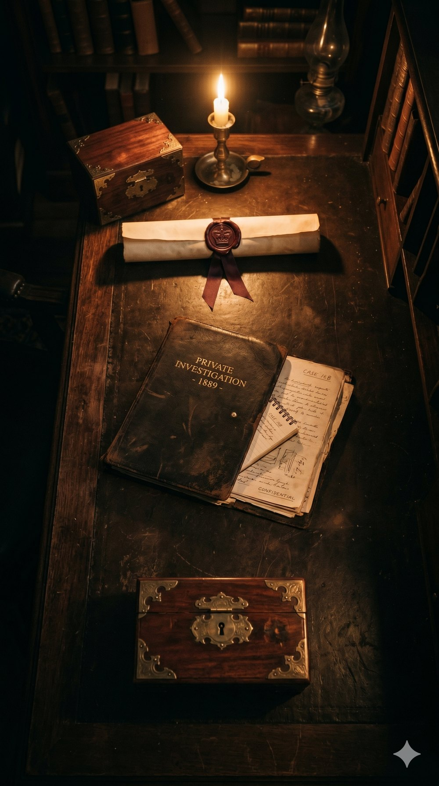
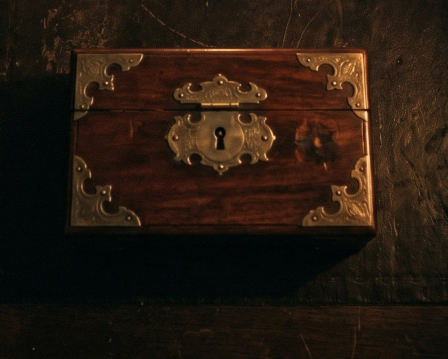

Clasificado · Caso Blackmoor 1889
—
ES
·
EN

Decreto Real
Informe de Ashton
Archivo Restringido
‹
Volver a la mesa
I · Decreto
‹
Volver a la mesa
II · Informe
‹
Volver a la mesa
III · Archivo
Cofre Sellado
—

Reiniciar